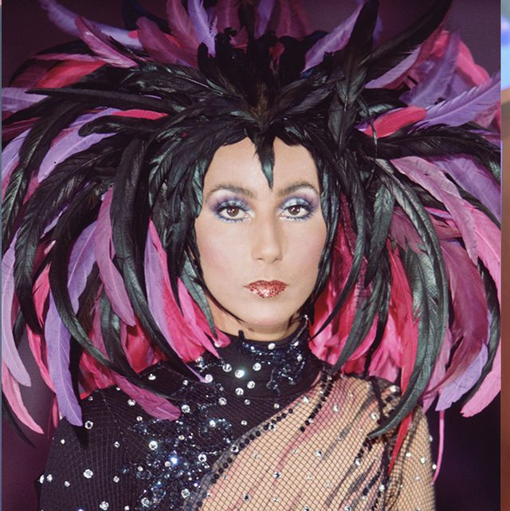
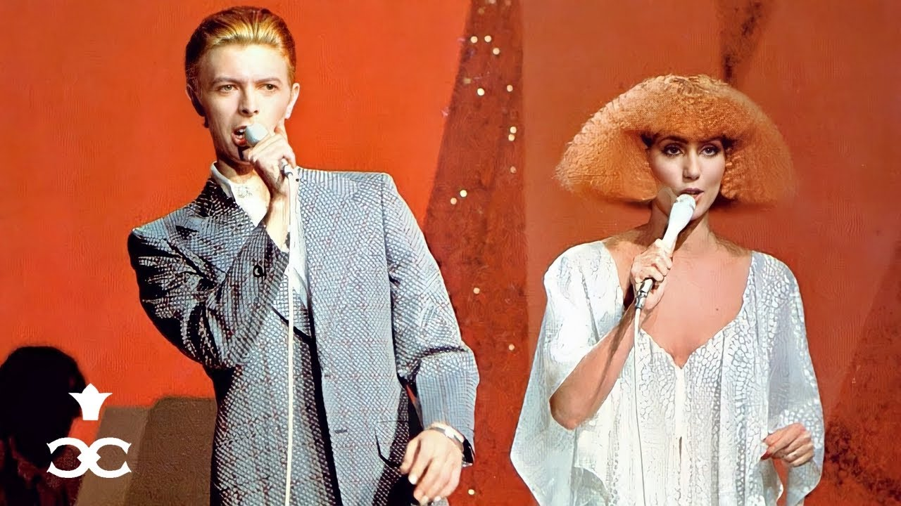

Rolling Stone's Rob Sheffield stated how "there are no other careers remotely like hers, [particularly] in the history of pop music" and referred to Cher as "the one-woman embodiment of the whole gaudy story of pop music."[365] According to Goldmine magazine's Phill Marder, Cher "has been and remains today one of the Rock Era's most dominant figures".[366] He described her as the leader of an effort in the 1960s to "advance feminine rebellion in the rock world [and] the prototype of the female rock star, setting the standard for appearance, from her early hippie days to her later outlandish outfits, and her attitude—the perfect female punk long before punk even was a rock term."[366] Billboard's Joe Lynch described Cher as "a woman who pioneered an androgynous musical identity in the mid '60s", and who by doing so "teed things up for people like Bowie and Patti Smith".[367]
Billboard's Keith Caulfield wrote that "there's divas, and then there's Cher."[368] The New York Times' Matthew Schneier stated, "[Cher] has earned her mononym. Her star power is such that she has spored an entire industry of imitators, both figurative and literal."[242] Dazed magazine's Shon Faye elaborates: "If Madonna and Lady Gaga and Kylie and Cyndi Lauper were playing football, Cher would be the stadium they played on, and the sun that shone down on them."[369] According to Jeff Miers from The Buffalo News, "Her music has changed with the times over the decades, rather than changing those times through groundbreaking work"; however, he felt that subsequent female pop singers were heavily inspired by Cher's abilities to combine "showmanship with deep musicality ... to make valid statements in a wide variety of trend-driven idioms ... to ease effortlessly between pop subgenres [and] to shock without alienating her fans", as well as by her charismatic stage presence and the strong LGBT support among her fan base.[370]
Cher has repeatedly reinvented herself through various personas,[403] for which Professor Richard Aquila from Ball State University called her "the ultimate pop chameleon".[404] According to Entertainment Weekly's Marc Snetiker, "Cher has floated through generation after generation, scooping up new fans, thrilling old ones, reinventing her own myth and glittering splendidly through it all."[254] Billboard magazine's Brooke Mazurek credited Cher as having "revolutionized the idea of what a pop star could visually accomplish, the way they could create multiple personas that live on and off-stage."[309] James Reed from The Boston Globe elaborates: "Along with David Bowie, she is one of the original chameleons in pop music, constantly in flux and challenging our perceptions of her[.]"[405] The New York Times declared Cher as the "Queen of the Comeback".[164] According to author Lucy O'Brien, "Cher adheres to the American Dream of reinvention of self: 'Getting old does not have to mean getting obsolete.'"[406]
Author Craig Crawford, in his book The Politics of Life: 25 Rules for Survival in a Brutal and Manipulative World (2007), describes Cher as "a model of flexible career management", and relates her career successes to a constant reshaping of her image according to the evolving trends of popular culture.[407] He further explains that she billed "each dramatic turnaround of style as another example of rebellion—an image that allowed her to make calculated changes while appearing to be consistent."[407] Author Grant McCracken stated, "The term 'reinvention' is now often used to talk about the careers of American celebrities. But in Cher's case, it is particularly apt [because she] is inclined to lock on to each new fashion wave [and] is swept violently down the diffusion stream and out of fashion. Only substantial re-creation permits her to return to stardom."[319] Her "integrity" and "perseverance" are highlighted in the Reaching Your Goals book series of illustrated inspirational stories for children, in which her life is detailed emphasizing the importance of self-actualization: "For years, Cher worked hard to become a successful singer. Then she worked hard to become an actress. Even when she needed money, she turned down movie roles that weren't right for her. Her goal has always been to be a good actress, not just a rich and famous one."[295]
Cher's "ability to forge an immensely successful and lengthy career as a woman in a male-dominated entertainment world"[370] has drawn attention from feminist critics.[408] According to author Diane Negra, Cher was presented in the beginning of her career as a product of male creativity;[409] Cher remembers, "It was a time when girl singers were patted on the head for being good and told not to think".[164] However, her image eventually changed due to her "refusal of dependence on a man and the determination not only to forge a career (as an actor) on her own terms but to refuse the conventional role assigned to women over forty years old in an industry that fetishises youth", wrote author Yvonne Tasker.[410] She was featured in the 16th-anniversary edition of Ms. magazine as an "authentic feminist hero" and a 1980s role model for women: "Cher, the straightforward, tattooed, dyslexic single mother, the first Oscar winner to have entered into matrimony with a known heroin addict and to have admitted to being a fashion victim by choice, has finally landed in an era that's not afraid to applaud real women."[411]
Stephanie Brush from The New York Times wrote, following the telecast of Cher's Oscar win in 1988, that she "performs the function for women moviegoers that Jack Nicholson has always fulfilled for men. Free of the burden of ever having been America's sweetheart, she is the one who represents us [women] in our revenge fantasies, telling all the fatheads ... exactly where they can go. You need to be more than beautiful to get away with this. You need to have been Cher for 40 years."[45] Cher's 1996 interview for Dateline NBC's Jane Pauley became a viral video in 2016; in it, Cher tells the story of her mother asking her to "settle down and marry a rich man," to which Cher replies, "Mom, I am a rich man."[412] Cher's "Mom, I am a rich man" quote was included in Taylor Swift's 2019 music video "You Need to Calm Down". Bustle magazine's Erica Kam commented, "[Cher's quote] puts a spin on typical gender norms ... It would make sense, then, that Swift would want to follow Cher's example."[398]
"Mom, I am a rich man."
Alec Mapa of The Advocate elaborates: "While the rest of us were sleeping, Cher's been out there for the last four decades living out every single one of our childhood fantasies ... Cher embodies an unapologetic freedom and fearlessness that some of us can only aspire to."[331] Rolling Stone's Jancee Dunn wrote, "Cher is the coolest woman who ever stood in shoes. Why? Because her motto is, 'I don't give a shit what you think, I'm going to wear this multicolored wig.' There are folks all over America who would, in their heart of hearts, love to date people half their age, get multiple tattoos and wear feathered headdresses. Cher does it for us."[413] Alexander Fury of The Independent wrote that Cher "represents a seemingly immortal, omnipotent, uni-monikered level of fame."[318] Bego stated: "No one in the history of show business has had a career of the magnitude and scope of Cher's. She has been a teenage pop star, a television hostess, a fashion magazine model, a rock star, a pop singer, a Broadway actress, an Academy Award-winning movie star, a disco sensation, and the subject of a mountain of press coverage."[414] Lynch wrote that "the world would certainly be different if she hadn't stayed so irrevocably Cher from the start."[367]